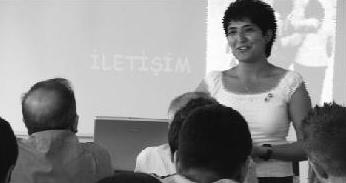

Seminer vermek harika bir duygu ve her seminerin bende bıraktığı hisler çok farklı. Kaman Cezaevi'nden orta yaşlı bir mahkûm elindeki mektubu göstererek, "Bu benim intihar mektubum, hayatın ne kadar zor olduğunu düşünüyordum. Ama bugün anladım ki hayatımın 26. Kilometresindeyim, ama durmayacağım, ayağımı 27. kilometreye değdireceğim. Eminim gerisi gelecek" dedi ve elindeki mektubu yırttı. (Sevgi Güler)
Sevgi, bu projenin en önemli hediyelerinden birini getirdi bize: bir mahkûmun intihar mektubunu. Sırf cezaevindeki konferans için bile tüm bu çabaya değerdi.